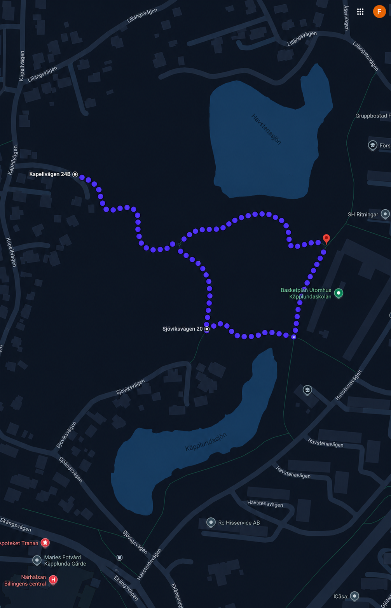

Bra att veta
Sprint Race är ett lokalt tidtagnings-event på en asfaltsslinga runt Käpplunda i Skövde.
Vi har lagt till löpning efter önskemål!
Banan är kort, teknisk och gjord för snabb körning med flytande kurvor, accelerationer och rytm.
Deltagarna kör individuellt mot klockan.
Eventet är tänkt att vara enkelt, socialt och öppet för både nybörjare och mer erfarna deltagare.
Uppvärmning startar 09:00.
Plats
Eventet hålls nära sjöarna bakom Käpplundaskolan i Skövde.
Bana
- Ungefär 1 km lång
- Slutliga banmarkeringar kan justeras

Regler och utrustning
Tävlingen är en individuell tidtagning. Varje deltagare startar ensam och kör mot klockan.
- Cykel eller till fots.
- Hjälm är obligatorisk för alla deltagare på cykel.
- Följ den markerade banan hela tiden.
- Det är inte tillåtet att gena eller lämna banan.
- Kör säkert och efter din egen förmåga.
- Visa respekt för deltagare, publik och personer i parken.
- Följ instruktioner från funktionärer och arrangörer.
- Starta när ditt namn eller nummer ropas upp.
- Det finns inga priser — bara ära.
- Snabbast tid vinner.
- Ta med egen vattenflaska och mat vid behov.
- Eventet är kostnadsfritt.